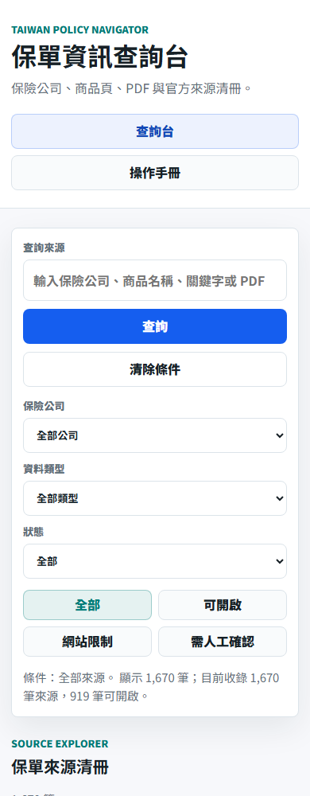

Start
1. 開始查詢
- 在首頁「查詢來源」輸入保險公司、商品名稱、關鍵字或 PDF 連結。
- 按「查詢」或按 Enter，列表會依目前條件更新。
- 按「清除條件」可回到完整資料集。

Filters
2. 用篩選縮小範圍
- 用「公司」篩出特定保險公司。
- 用「文件類型」切換 PDF 條款、HTML 頁面、官方查詢頁或其他來源。
- 用「抓取狀態」分辨可開啟、網站限制與需人工確認。


Insights
3. 看懂圖像化重點
- 先看「來源總覽」，確認目前資料量、已檢查比例與可開啟來源數。
- 再看「保單內容抽取」，確認系統已解析多少 PDF/HTML、文字量與欄位命中。
- 用「重點欄位命中」判斷哪些資料已碰到理賠/給付、名詞定義、除外責任、等待期、保費續保、投保限制。
- 在「抽取範例」按「官方來源」，可回到保險公司或官方網站核對原始文件。


Cards
4. 閱讀來源卡片
- 每張卡片代表一個官方來源 URL。
- 優先看公司、來源類型、抓取狀態與 HTTP 狀態。
- 按「開啟來源」可到原始網站確認文件內容。
- 按「複製連結」可分享官方來源給後續查核。

Status
5. 狀態說明
| 狀態 | 意義 | 建議動作 |
|---|---|---|
| 可開啟 | 網站允許讀取，且來源目前可取得。 | 可進一步查看或整理條款重點。 |
| 網站限制 | robots 規則不允許自動抓取。 | 保留網址，不做自動內容抽取。 |
| 需人工確認 | 來源逾時、錯誤、404 或格式待確認。 | 後續人工重新檢查。 |
| 人工驗證 | 保發中心停售查詢有圖形驗證碼。 | 人工完成驗證碼後匯入結果。 |
Reader Questions
6. 一般民眾最常問的重點
- 這張保單哪些情況會理賠或給付？
- 重要名詞怎麼定義，例如疾病、傷害、住院、手術？
- 是否有等待期、免責期或不賠條件？
- 除外責任有哪些？
- 保費、續保、停效、解約或取消有哪些限制？
- 投保年齡、職業、健康告知或承保限制是什麼？
- 官方文件在哪裡，能不能回到原始來源確認？

Progress
7. 目前資料進度
自動保單 URL 批次 policy-url-001 到 policy-url-017 已完成，共處理 1,343 個保單 URL。其中 559 個可讀取，532 個受 robots 規則限制，252 個錯誤或逾時。
內容抽取已完成所有 559 個可讀取來源，包含 551 筆 PDF 與 8 筆 HTML。系統共解析 6,373,892 個文字字元，555 筆來源命中至少一個民眾關心欄位。
TII
8. 保發中心停售保單
保發中心查詢頁分為產險與壽險/人身險。網站目前已建立 108 個產險人工查詢批次與 198 個壽險/人身險人工查詢批次。
因查詢結果需要圖形驗證碼，本專案不破解驗證碼。可在網站上逐批開啟查詢頁，人工完成驗證後再匯入結果。